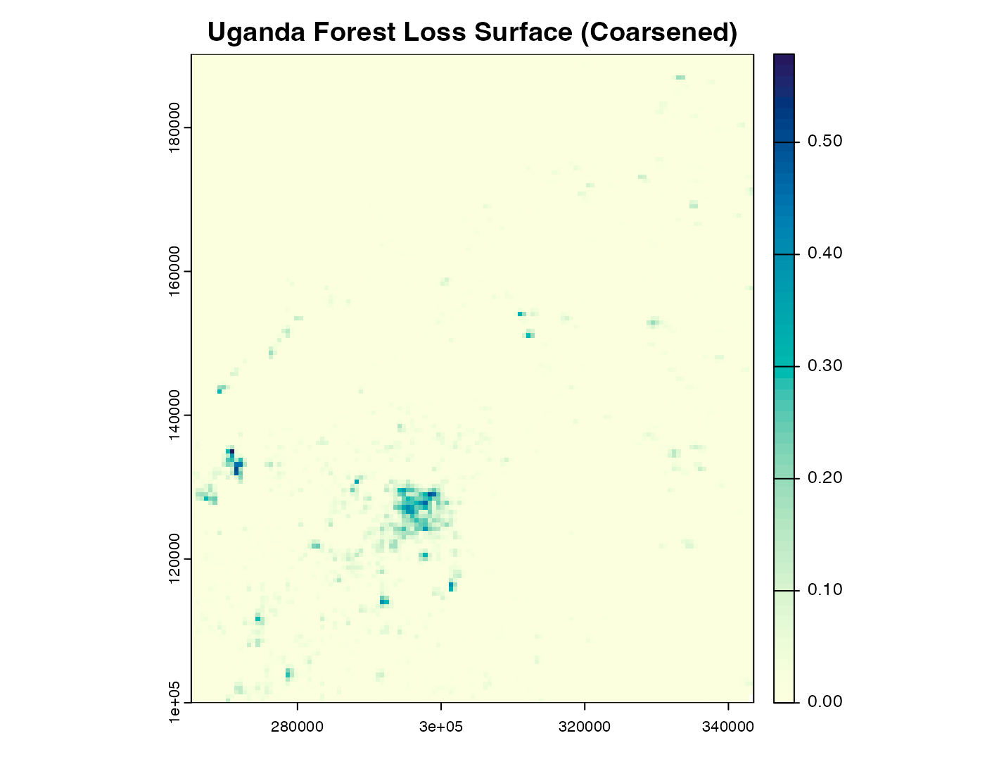
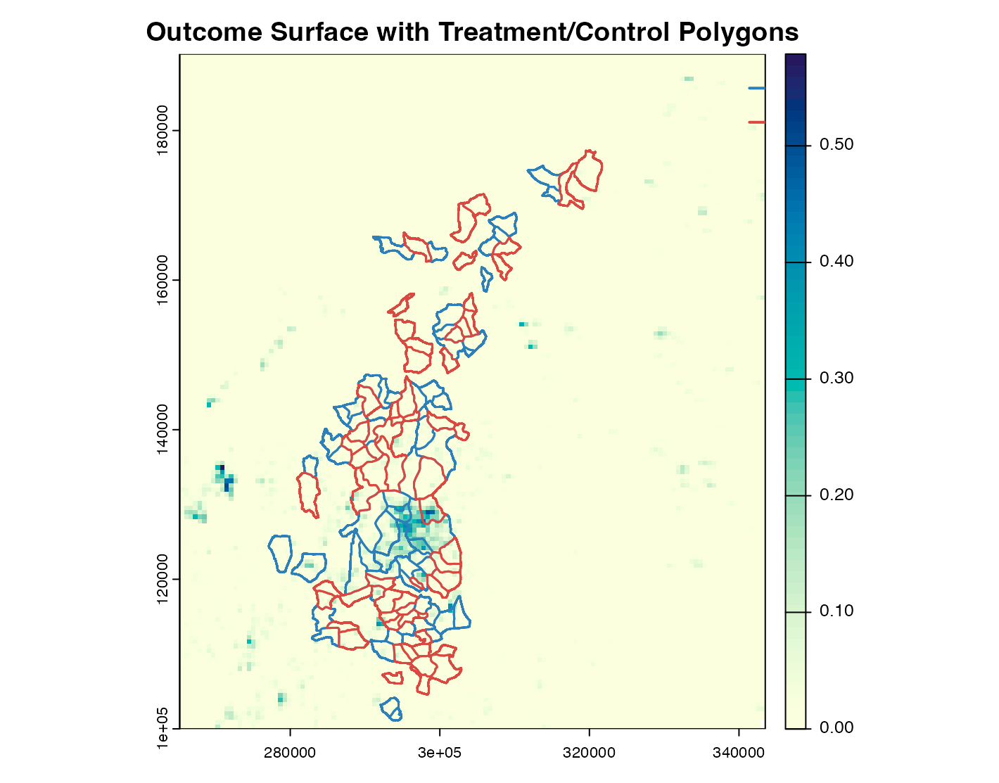
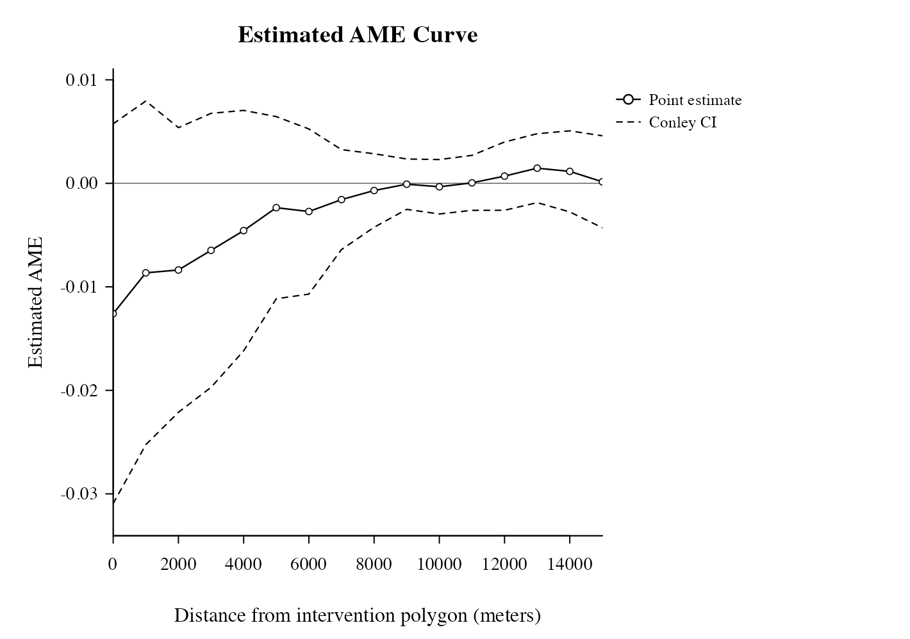

Jayachandran et al. (2017)
applications.Rmd1. Background
This example follows Jayachandran et al. (2017), a randomized intervention in Uganda on forest conservation. Treatment is assigned at polygon units, and outcomes come from spatial forest-loss raster data. We use this setting to estimate how forest-loss effects vary with distance from each intervention polygon.
2. Load Data
library(SpatialEffect2)
library(terra)
library(sf)
# The article ships with a small replication bundle so the code does not rely
# on any local file paths.
jay_bundle <- locate_bundle("jayachandran_etal_2017_bundle.zip")
stopifnot(!is.na(jay_bundle))
td <- tempfile("jay2017_")
dir.create(td)
unzip(jay_bundle, exdir = td)
base_dir <- file.path(td, "jayachandran_etal_2017")
tif_path <- file.path(base_dir, "data", "rct_uganda_gfc_updated.tif")
shp_path <- file.path(base_dir, "data", "digitized_rct", "rct_studyarea_vectorized.shp")
ras_all <- rast(tif_path)
# Use the forest-loss layer and coarsen it slightly so the vignette runs fast.
ras_loss <- if ("fcloss2012" %in% names(ras_all)) ras_all[["fcloss2012"]] else ras_all[[min(3, nlyr(ras_all))]]
ras <- aggregate(ras_loss, fact = 20, fun = mean, na.rm = TRUE)
# Project to a meter-based CRS so distances in dVec are interpreted in meters.
ras <- project(ras, "EPSG:32636")
map_sf <- st_read(shp_path, quiet = TRUE)
# SpatialEffect2 accepts polygon interventions through ras_Z.
map_vect <- project(vect(map_sf), crs(ras))
# Keep one treatment row per intervention polygon.
Zdata <- data.frame(treatment = as.integer(st_drop_geometry(map_sf)$z))3. Quick Descriptive Check
# Basic assignment balance.
c(
n_polygons = nrow(Zdata),
n_treated = sum(Zdata$treatment == 1),
n_control = sum(Zdata$treatment == 0),
treatment_share = mean(Zdata$treatment == 1)
)
#> n_polygons n_treated n_control treatment_share
#> 121.0000000 60.0000000 61.0000000 0.4958678
# Outcome values after raster coarsening.
summary(values(ras)[, 1])
#> Min. 1st Qu. Median Mean 3rd Qu. Max. NA's
#> 0.000000 0.000000 0.000000 0.006815 0.002819 0.578747 24. Visualize the Data
# First look at the outcome surface by itself.
plot(
ras,
main = "Uganda Forest Loss Surface (Coarsened)",
col = hcl.colors(60, "YlGnBu", rev = TRUE)
)
# Then overlay treatment and control polygons.
plot(
ras,
main = "Outcome Surface with Treatment/Control Polygons",
col = hcl.colors(60, "YlGnBu", rev = TRUE)
)
plot(map_vect[Zdata$treatment == 0, ], add = TRUE, border = "#2C7FB8", lwd = 1.5)
plot(map_vect[Zdata$treatment == 1, ], add = TRUE, border = "#D94841", lwd = 1.5)
legend(
"topright",
legend = c("control", "treated"),
col = c("#2C7FB8", "#D94841"),
lwd = 2,
bty = "n"
)
5. Estimand of Interest
We target the Average Marginalized Effect (AME) at
distance d: the average causal effect of switching one
intervention node from control to treatment on outcomes at distance
d, marginalized over other nodes’ assignments.
Here, distance is measured from each intervention polygon to surrounding raster cells. A negative AME means lower forest loss around treated polygons relative to control polygons at that distance.
6. Estimate with SpatialEffect2
dVec_km <- seq(0, 15, by = 1)
# The raster is projected in meters, so convert the display grid from km to m.
dVec_m <- dVec_km * 1000
# With cType = "donut", each point after 0 km uses the adjacent 1-km ring:
# 1 km uses [0, 1] km, 2 km uses [1, 2] km, and so on.
result <- SpatialEffect(
ras = ras,
ras_Z = map_vect,
Zdata = Zdata,
treatment = "treatment",
dVec = dVec_m,
cType = "donut",
dist.metric = "Euclidean",
smooth = 0,
# Use Conley SE so the S3 plot can display uncertainty. For a fuller
# randomization analysis, increase nPerms and set per.se = 1.
per.se = 0,
conley.se = 1,
cutoff = 10000,
nPerms = 200,
n_threads = 1L
)
head(result$AME_est, 8)
#> d taud_est
#> 1 0 -0.012591346
#> 2 1000 -0.008647901
#> 3 2000 -0.008371255
#> 4 3000 -0.006474221
#> 5 4000 -0.004568744
#> 6 5000 -0.002353318
#> 7 6000 -0.002724544
#> 8 7000 -0.0015728617. Look at the Estimated Results
The returned object has class "SpatialEffect", so
graphics::plot(result, ...) dispatches to SpatialEffect2’s
S3 method, plot.SpatialEffect(). Because this run sets
conley.se = 1, the plot includes Conley confidence
intervals around the estimated AME curve.
graphics::plot(
result,
smooth = FALSE,
ci.type = "conley",
style = "lines",
xlab = "Distance from intervention polygon (meters)",
ylab = "Estimated AME",
main = "Estimated AME Curve"
)
# The S3 summary method is convenient for a quick numeric check.
summary(result, dVec.range = c(0, 5000))
#> Call: SpatialEffect
#>
#> dVec AME_est Conley.CI.l Conley.CI.u
#> [1,] 0 -0.013 -0.031 0.006
#> [2,] 1000 -0.009 -0.025 0.008
#> [3,] 2000 -0.008 -0.022 0.005
#> [4,] 3000 -0.006 -0.020 0.007
#> [5,] 4000 -0.005 -0.016 0.007
#> [6,] 5000 -0.002 -0.011 0.006
ame <- result$AME_est
ame$km <- ame$d / 1000
subset(ame, km %in% c(0, 1, 3, 5, 10, 15))
#> d taud_est km
#> 1 0 -0.0125913461 0
#> 2 1000 -0.0086479013 1
#> 4 3000 -0.0064742213 3
#> 6 5000 -0.0023533184 5
#> 11 10000 -0.0003329416 10
#> 16 15000 0.0001494409 158. Optional: Test a Policy-Relevant Distance Range
# Test whether the summed AME over 0-3 km is unusual under random reassignment.
test <- SpatialEffectTest(
result.list = result,
test.range = c(0, 3000), # 0-3 km
smooth = 0,
alpha = 0.05
)
#> Too many permutations to use exact method.
#> Defaulting to approximate method.
#> Increase maxiter to at least 1.91645966716128e+35 to perform exact estimation.
test
#> $test.stat
#> [1] -0.03608472
#>
#> $test.CI
#> 2.5% 97.5%
#> -0.03771719 0.03645187
test$test.stat < test$test.CI[1] || test$test.stat > test$test.CI[2]
#> [1] FALSETRUE means the observed range-level effect lies outside
the permutation null interval at level alpha.
9. Interpretation
In this run, AME estimates are negative at short distances and move toward zero at larger distances. Substantively, this pattern is consistent with stronger local treatment effects and weaker effects farther away.
For permutation intervals at each distance, increase
nPerms and set per.se = 1.